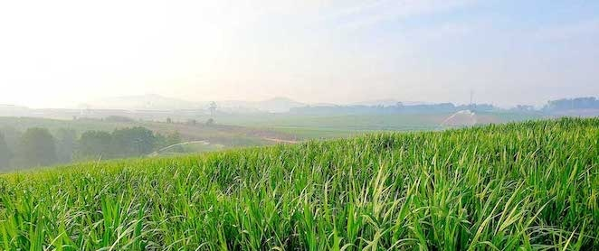
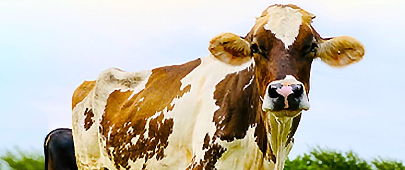
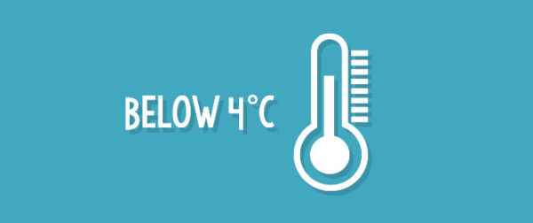
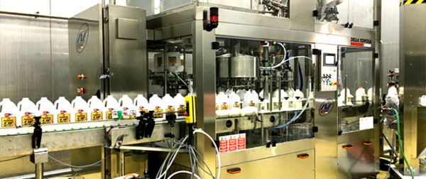
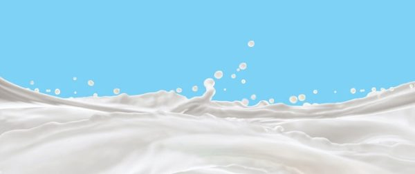
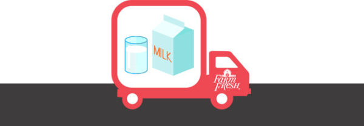
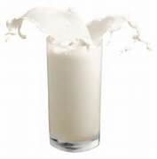

Dairy, The Way It Should Be
Call us old fashioned, but we believe that the best dairy comes from fresh milk, milked from happy cows in a serene farm with the greenest pasture, and untampered by preservatives and any other contaminants.
Call us old fashioned, but we believe that the best dairy comes from fresh milk, milked from happy cows in a serene farm with the greenest pasture, and untampered by preservatives and any other contaminants.
All of our Australian Holstein Jersey and Friesian-Sahiwal cows feed on grass grown at our farms, ensuring a naturally healthy and wholesome diet.
We work overtime to give our "ladies", as we affectionately call them, the best on-farm experience. All our ladies are given daily attention and care, ample shelter in the evening and even the occasional treatment, like a free pedicure!
They are milked every morning at 5am and evening at 5pm, taking advantage of the best times for milking and ensuring that you receive your dairy tasting the best it can.
Fresh dairy is a sensitive product that responds quickly to temperature changes, so we make sure our milk is stored below 4°C from the moment it is milked.
Safety is of utmost importance in the entire process. We pasteurize our milk, destroying pathogens that may contaminate it.
To ensure our dairy tastes the best it can, each drop is then tested for its composition. A high level of protein means that the dairy is both nutritious and delicious.
We endeavor to get our dairy to you just as nature intended it to be. To maintain the freshness of the product, all dairy is bottled and transported to your nearest shelves as freshly and naturally as possible, ready for your consumption.
WE TAKE GREAT CARE TO PRODUCE ONLY THE FINEST IN QUALITY
